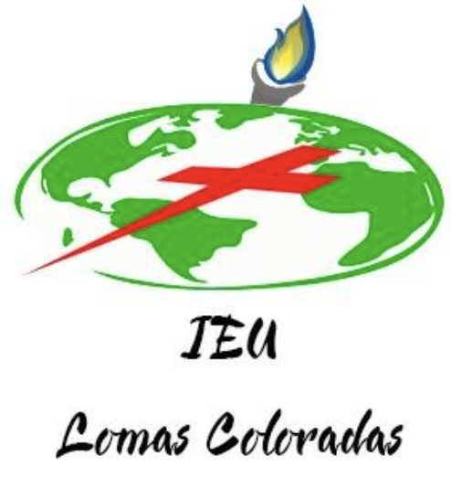
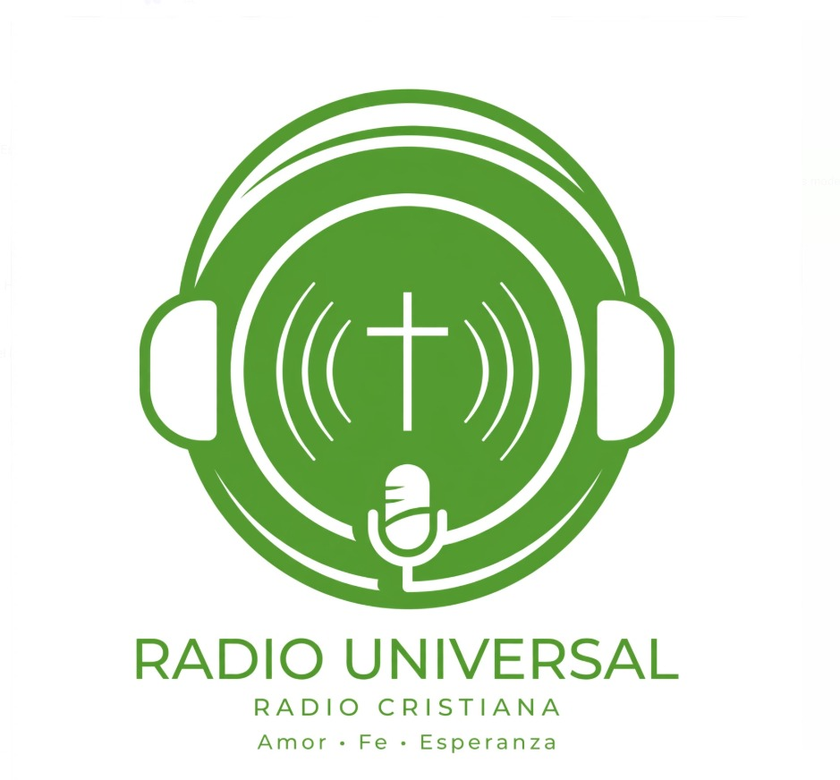
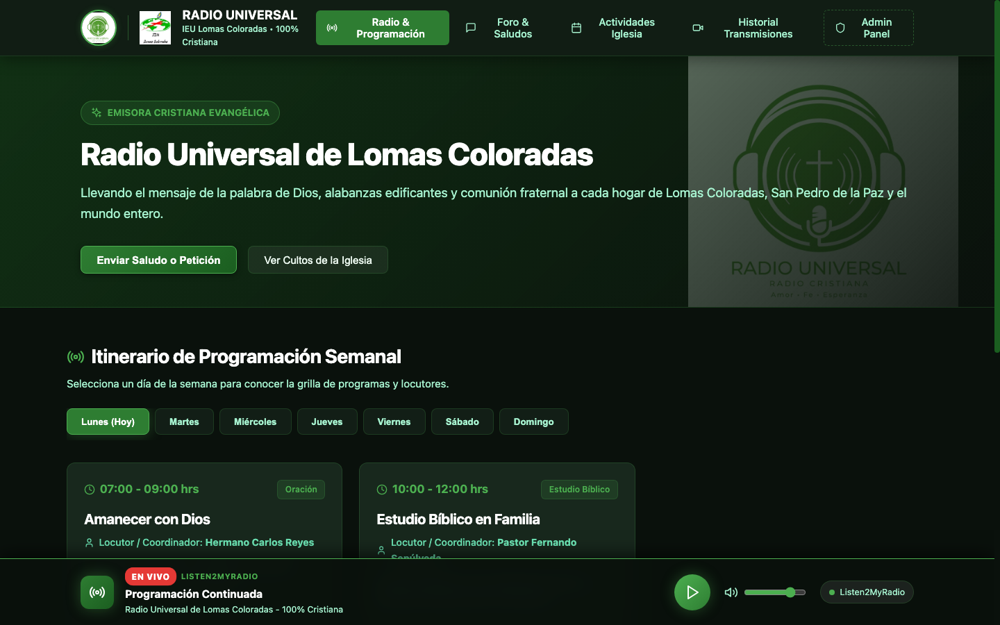
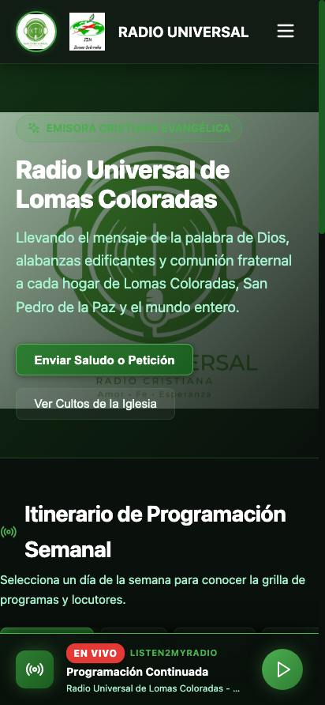
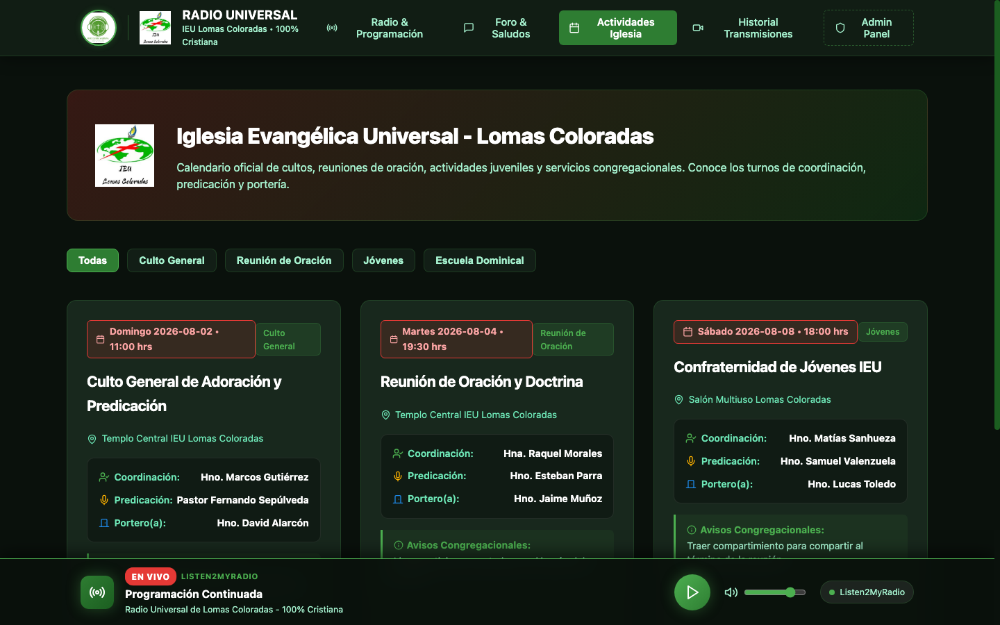
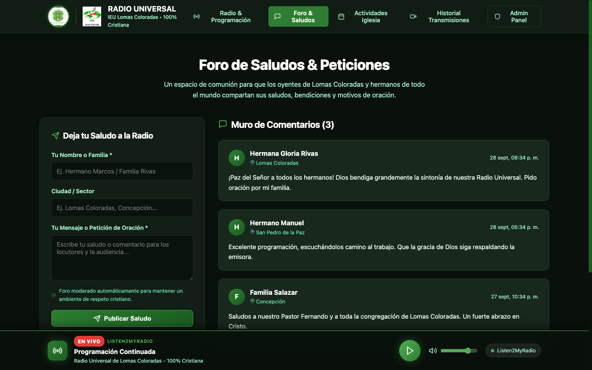
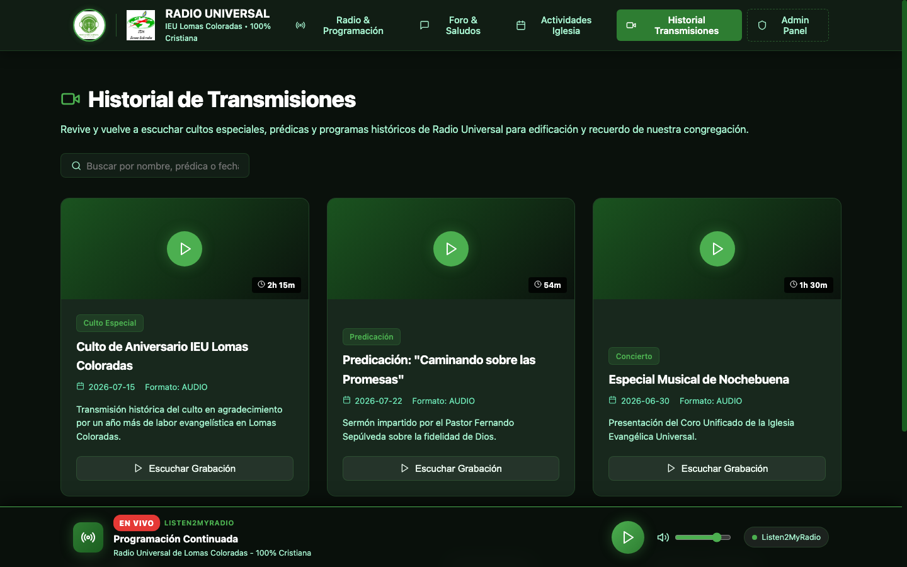
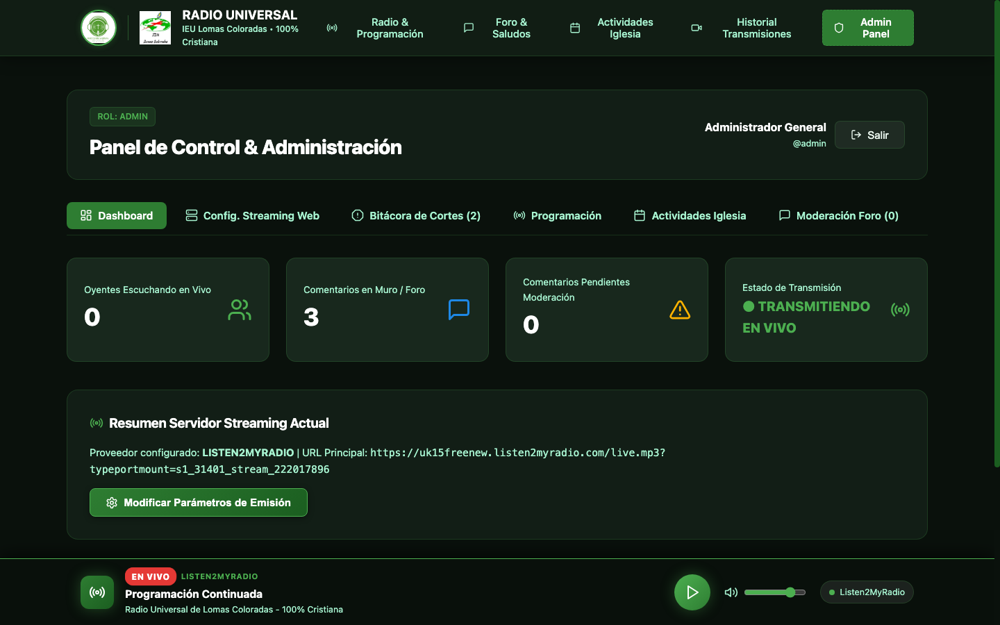

Conectando nuestra congregación, abriendo las puertas a la comunidad y activando los dones de cada hermano y hermana en el Reino de Dios.


Diseñada para que cualquier hermano, vecino o visitante sintonice la señal con un solo toque, sin trabas técnicas.
Acceso directo desde cualquier navegador con reproductor continuo, información de cultos, cartelera semanal y archivo de prédicas.
Se instala fácilmente en teléfonos Android y iPhone sin depender de tiendas de aplicaciones, permitiendo escuchar mientras se camina, trabaja o viaja.
Streaming en alta calidad optimizado para no agotar el plan de datos móviles y seguir sonando incluso con señal débil.
Una herramienta creada exclusivamente para la salvación, acompañamiento y edificación espiritual de las vidas.
No buscamos generar ingresos, cobrar suscripciones ni emitir publicidad comercial.
La única meta es llevar el mensaje de salvación de Jesucristo las 24 horas del día a cada hogar, lugar de trabajo y automóvil.
Llegar a los hogares de hermanos enfermos, adultos mayores y personas postradas que no pueden congregarse en el templo físico.
Acompañar a trabajadores en turnos nocturnos y a quienes atraviesan soledad o aflicción.
Una parrilla ordenada por bloques con horarios públicos y transparentes para toda la congregación.
Música cristiana seleccionada, lecturas bíblicas comentadas y retransmisión de las prédicas dominicales para edificar el hogar.
La audiencia sabe exactamente qué programa está al aire y qué bloques devocionales vienen a continuación durante la semana.
Automatización inteligente que mantiene la transmisión activa permanentemente, aun cuando no haya operador en vivo.
Conectando a los vecinos de Lomas Coloradas, San Pedro de la Paz y alrededores con el Evangelio de Cristo.
Para muchas personas, el primer contacto con Dios no ocurre pisando el templo por primera vez.
Ocurre en la intimidad de su teléfono celular, escuchando una alabanza que toca su corazón o una palabra de aliento en un momento difícil.
Una forma cercana y respetuosa de entrar a los hogares del sector: vecinos, comerciantes, familias y jóvenes.
La radio se convierte en la voz amiga de la iglesia que bendice y acompaña el día a día del vecindario.
Una vitrina pública con dirección, cultos, horarios y la organización transparente de los servicios.

Cualquier persona puede ver al instante cómo llegar al templo y cuándo se realizan los cultos generales, escuela dominical y reuniones de oración.
Turnos de coordinación, predicación y portería visibles para toda la congregación, promoviendo puntualidad, orden y compromiso ministerial.
Un templo con puertas y ventanas abiertas para recibir a toda alma que Dios envíe a nuestras reuniones.
Integrando a hermanos y hermanas que hoy participan poco en la liturgia tradicional del altar.
La plataforma digital abre un campo inmenso para que decenas de hermanos y hermanas sirvan activamente en la obra de Dios con sus habilidades particulares.
Nuevos ministerios prácticos al servicio de la iglesia:
• Locución y testimonios: Relatar victorias de Dios.
• Lectura bíblica comentada: Devocionales diarios.
• Operación de audio y edición: Capacitación para jóvenes.
• Redacción y coordinación: Manejo de parrilla.
Un espacio interactivo donde la iglesia ora e intercede en tiempo real por cada necesidad.
Hermanos y vecinos pueden ingresar sus motivos de oración por salud, familia, trabajo o gratitud directamente desde su teléfono o computador.
Hermanas y hermanos dedicados a responder con amor a cada solicitud, orando pastoralmente por los afligidos.
Los mensajes son supervisados para mantener la edificación, el respeto y la sana doctrina en todo momento.

Solución integral desarrollada, probada y lista para operar de inmediato con altos estándares de calidad.

Si la conexión a internet en el templo o en el celular cae temporalmente, el sistema se reconecta automáticamente sin que el oyente deba recargar la página.
Los cultos y enseñanzas dominicales quedan guardados bajo demanda para volver a escucharlos y compartirlos con quien los necesite.
Arquitectura ligera diseñada para funcionar con servidores streaming eficientes y de bajísimo presupuesto.
Herramientas completas para monitorear oyentes en vivo, actualizar programas y moderar la comunidad.
Conocer cuántos oyentes están conectados en vivo, picos de audiencia durante cultos especiales y rendimiento de la señal.
Aprobación y administración de los mensajes del foro de oración para velar por la edificación espiritual y la seguridad.
Cambio inmediato de enlaces de emisión (CasterFM, Listen2MyRadio, Icecast) sin necesidad de reprogramar la aplicación.

Un desarrollo ordenado, con bases firmes, asegurando primero lo que hoy ya está operativo.
Plataforma totalmente construida y probada para transmisión 24/7 y acceso congregacional inmediato.
Involucrar activamente a los diferentes departamentos de nuestra congregación con programas temáticos.
Proyectando la iglesia hacia la transmisión en video para cultos especiales, conferencias y aniversarios.
Transmisión en vivo multicámara de cultos de adoración, aniversarios de la iglesia y conferencias especiales para hermanos lejanos.
Repositorio permanente de predicaciones y estudios en alta definición, permitiendo que la Palabra de Dios sea buscada y encontrada en cualquier país.
Formación de un ministerio audiovisual integrado por jóvenes y hermanos con anhelo de operar cámaras, sonido e iluminación.
Una obra que pertenece a Dios y necesita de los corazones, oraciones y manos de toda la iglesia.
Poner esta señal en las manos del Señor para que cada alabanza y mensaje toque corazones, consuele enfermos y libre a quienes están en oscuridad.
Convidar a hermanos y hermanas que tengan el deseo de servir: locución, lectura de la Biblia, testimonios, apoyo técnico o moderación de oraciones.
Compartir el enlace con vecinos, compañeros de trabajo, familiares y ancianos para que la presencia del Señor entre en sus vidas.